"Nenhum povo é seu passado, mas todos são a sua memória."
Uma trilha cronológica completa para dominar Humanas no ENEM. Questões-modelo, flashcards e jogos em cada módulo.
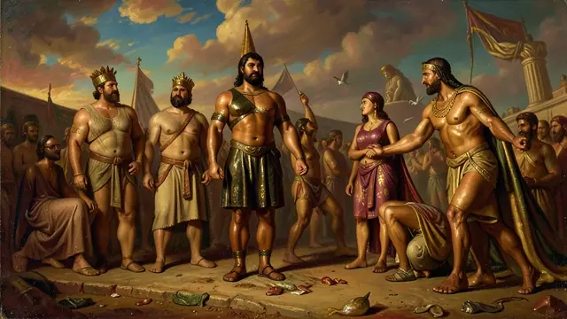
2000 a.C. - 330 a.C.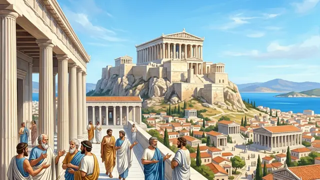
800 a.C. - 146 a.C.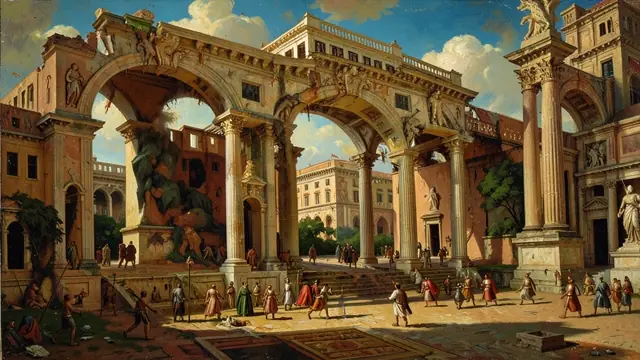
753 a.C. - 476 d.C.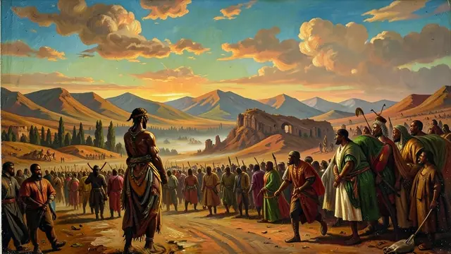
Séculos IV - XVI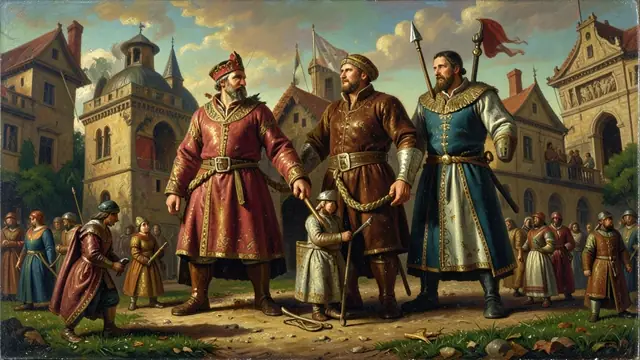
Século V - XV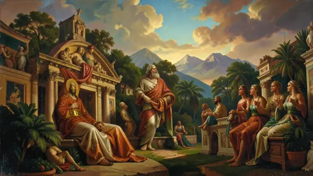
Século XIV - XVII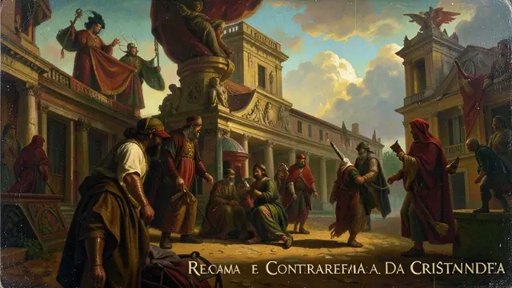
Século XVI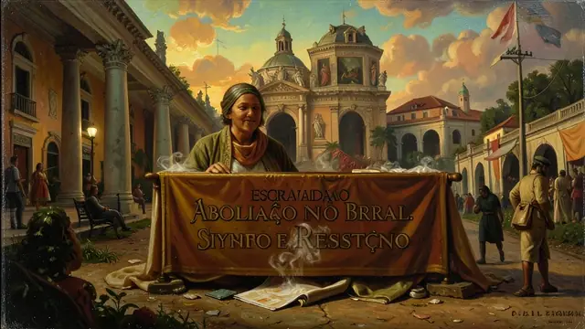
1530 - 1888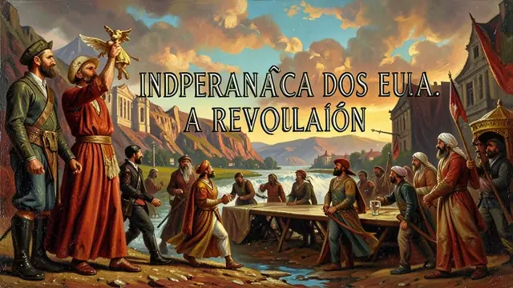
1776 - 1787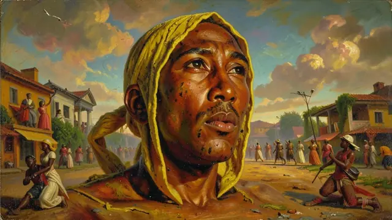
1791 - 1804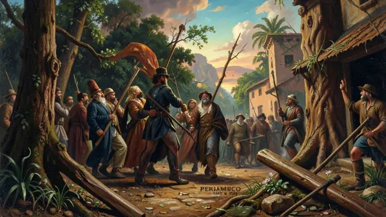
1817 - 1824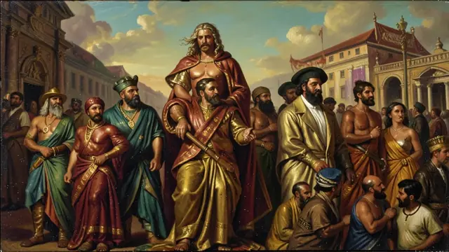
Século XIX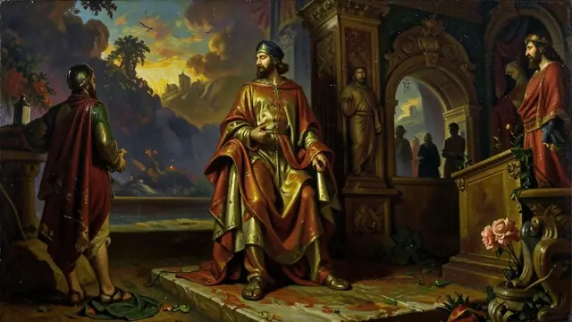
1831 - 1840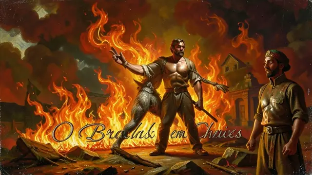
1831 - 1840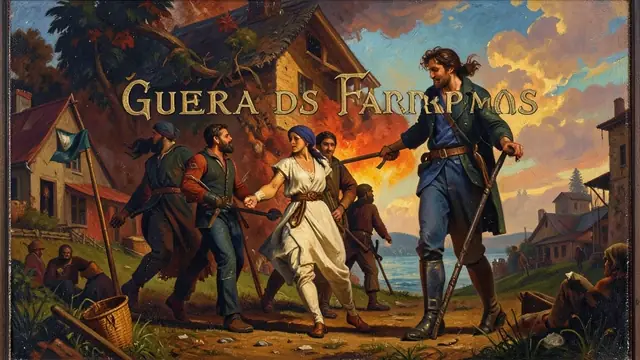
1835 - 1845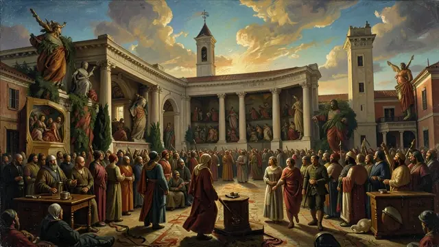
1850 - 1871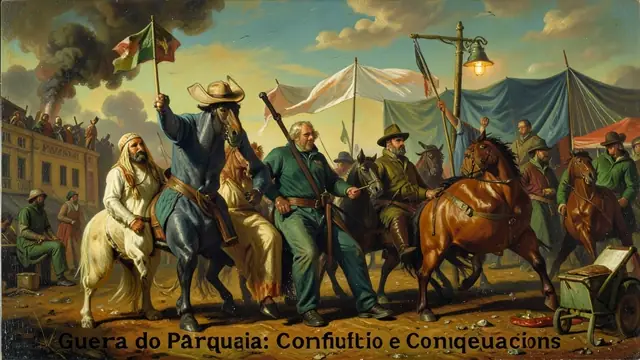
1864 - 1870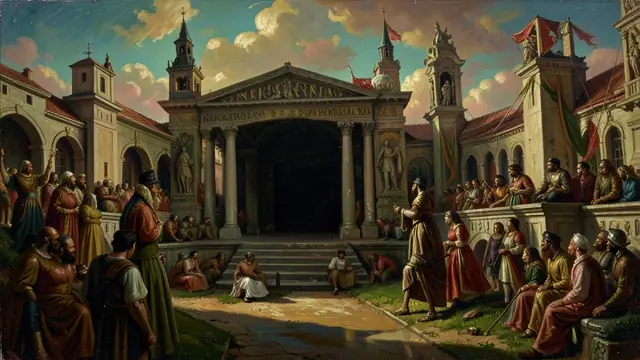
Século XIX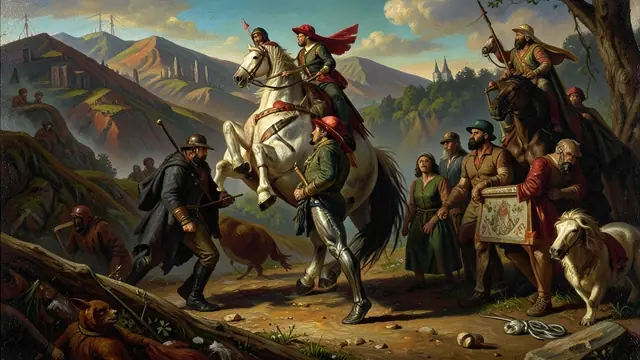
1889 - 1930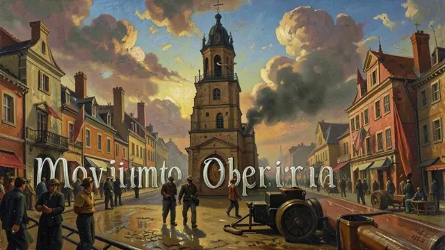
1900 - 1930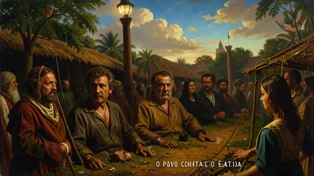
1904 - 1910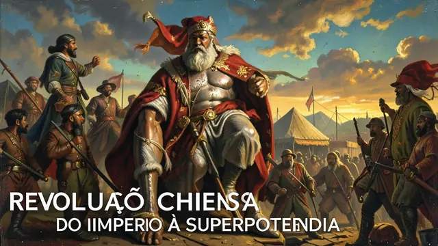
1911 - Presente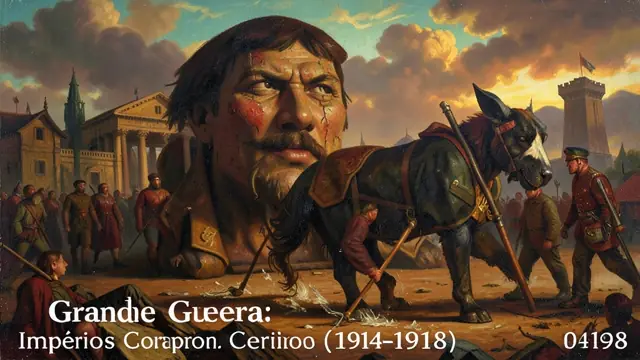
Século XX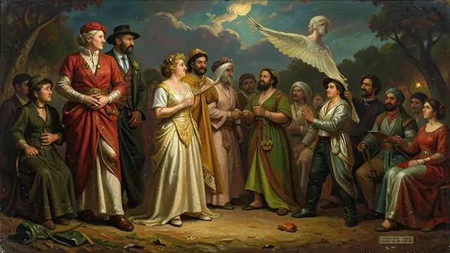
1922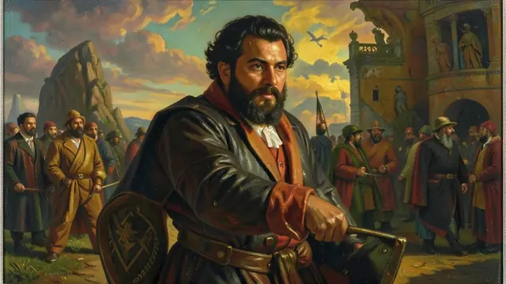
1922 - 1930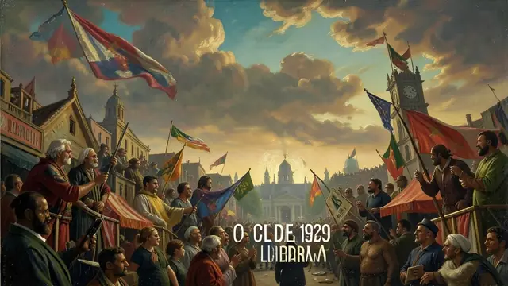
1929 - 1939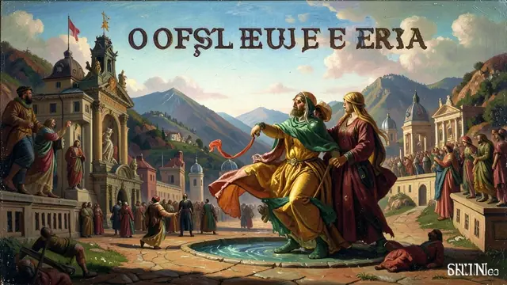
1930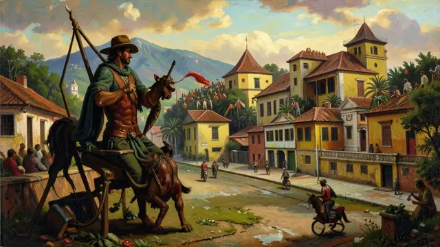
1932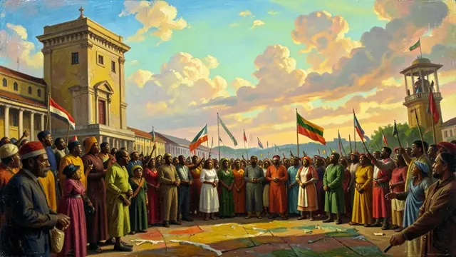
1945 - 1975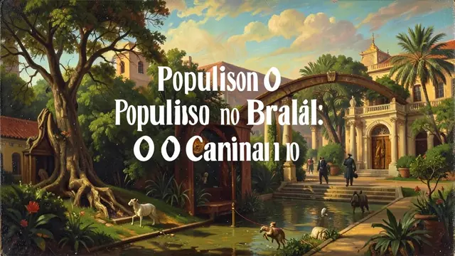
1945 - 1964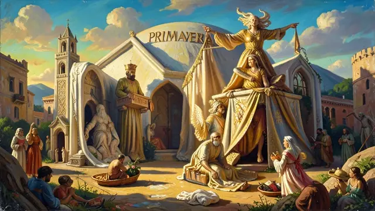
2010 - Presente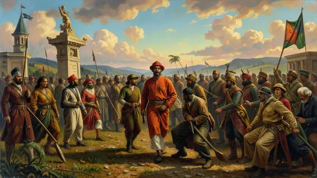
Século XIX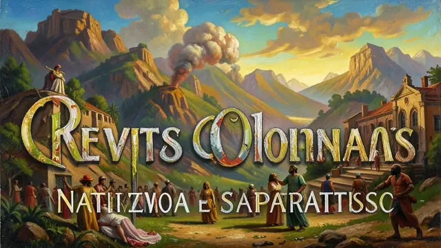
Séculos XVII e XVIII